Dịch vụ trò chuyện (conversation service) và Dịch vụ chatbot (chatbot service)
Sơ đồ tổng quan về Dịch vụ trò chuyện (conversation service) và Dịch vụ chatbot (chatbot service)
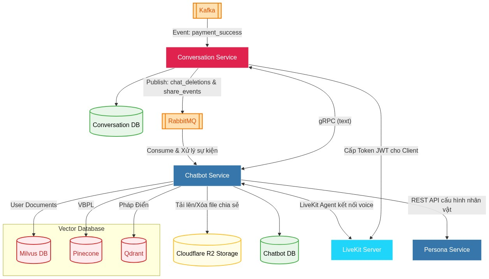
Vì chức năng trò chuyện văn bản suy luận và trò chuyện giọng nói chỉ dành cho người dùng có gói VIP, nên dịch vụ trò chuyện (conversation service) cần lắng nghe sự kiện thanh toán thành công từ kafka Lưu lại thông tin trong database và Kiểm tra người dùng hiện tại có phải người dùng VIP.
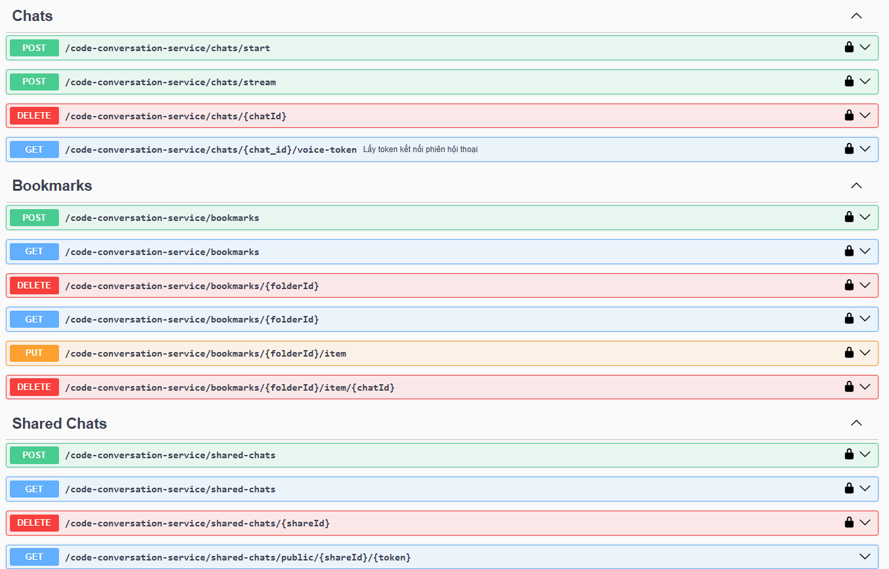
Mục đích: chịu trách nhiệm quản lý giao tiếp giữa người dùng và hệ thống Agentic RAG. Dịch vụ này xử lý trực tiếp các cuộc trò chuyện văn bản theo cơ chế streaming, cấp phát quyền truy cập cho luồng giao tiếp giọng nói, và cung cấp các tiện ích lưu trữ, chia sẻ trò chuyện.
bắt đầu một luồng trò chuyện mới.
cấp phát token trò chuyện giọng nói
xử lý tin nhắn từ người dùng kết nối với Dịch vụ chatbot (chatbot service) bằng gRPC
xóa mềm một cuộc trò chuyện khỏi hệ thống.
Người dùng có thể tạo các thư mục lưu trữ
Cho phép Đánh dấu một cuộc trò chuyện và Ghi chú nội dung
Tạo ra một "bản snapshot" Chia sẻ cuộc trò chuyện
Cung cấp URL công khai có shareId và token
Chủ sở hữu đoạn chat có thể xem danh sách các liên kết đã tạo và thu hồi quyền truy cập bất cứ lúc nào.
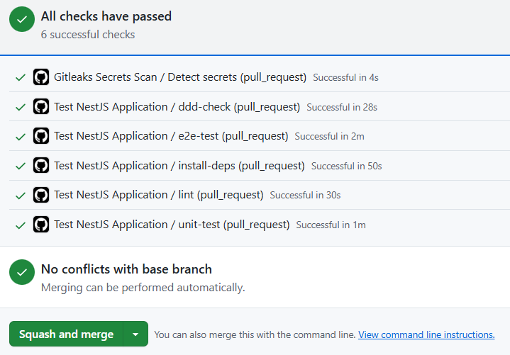
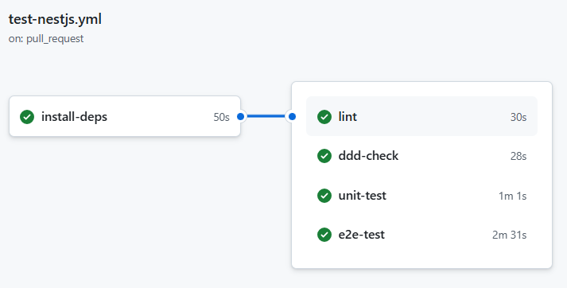
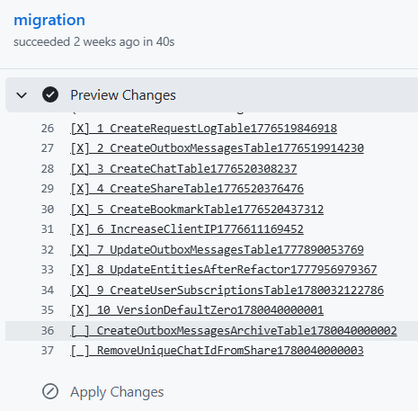
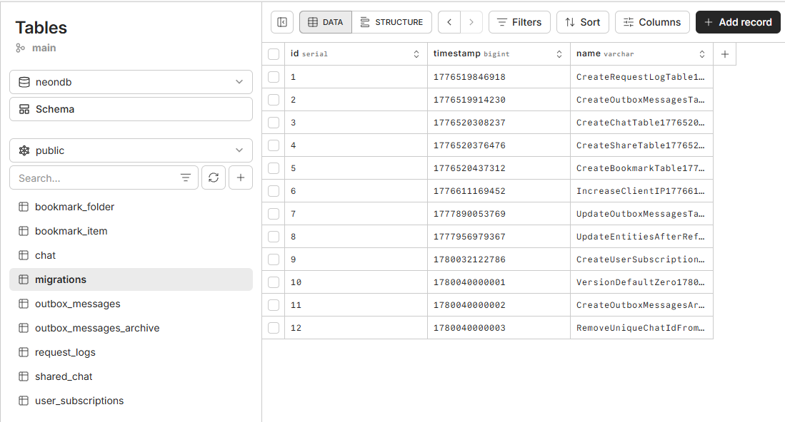
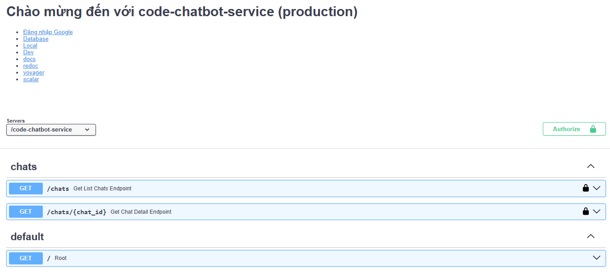
Mục đích: dùng các công nghệ AI xử lý trao đổi với người dùng. Sau đó lưu lại lịch sử trò chuyện và cung cấp các API về lịch sử các cuộc trò chuyện và chi tiết thông tin suy luận, nguồn tài liệu của từng câu trả lời của cuộc trò chuyện. Lắng nghe RabbitMQ để tạo và thu hồi chia sẻ trò chuyện. Lắng nghe Livekit để thực hiện chức năng trò chuyện giọng nói với người dùng.
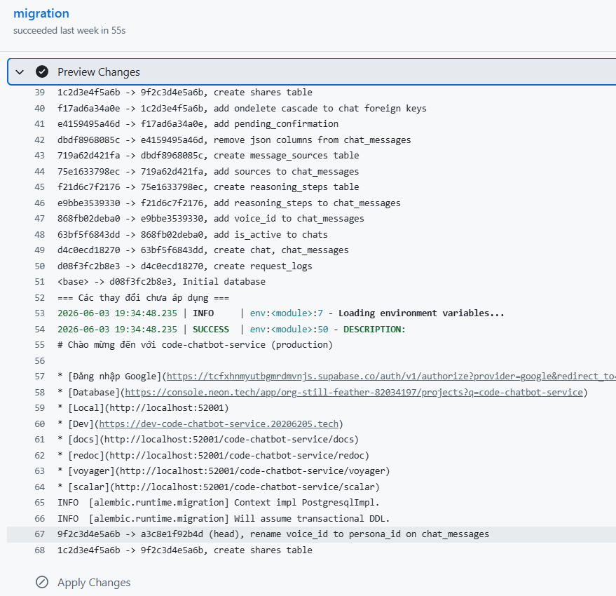
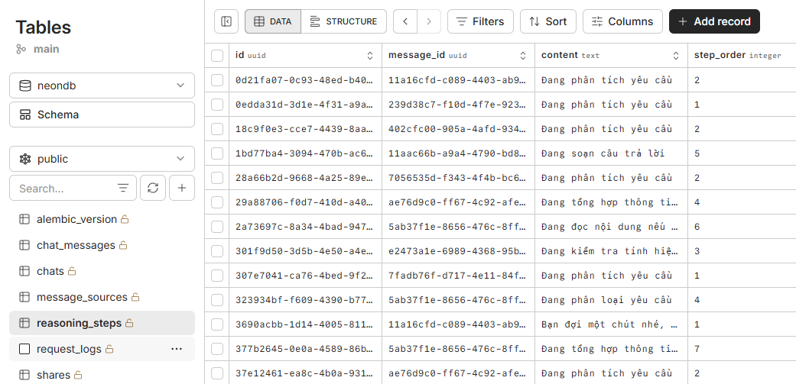
Cấu hình Adapter các LLM (Groq, Ollama và NVIDIA) có khả năng tool calling đảm bảo tính sẵn sàng cao. Có công cụ lấy thông tin nhân vật và công cụ gọi LangGraph. Khả năng chuyển đổi giữa ElevenLabs, Edge TTS và Piper TTS đáp ứng linh hoạt theo cấu hình nhân vật.
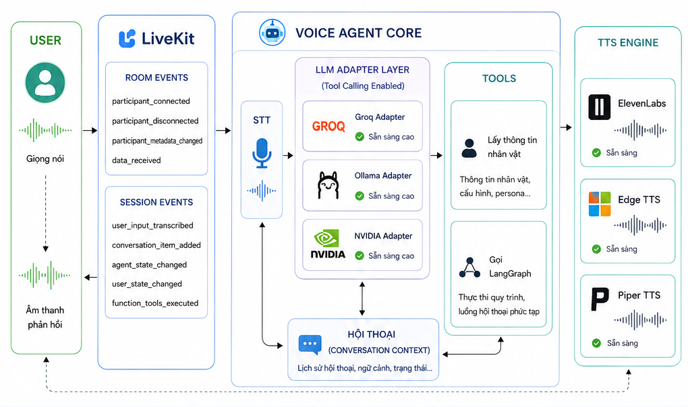
Các sự kiện LiveKit được hệ thống Voice Agent sử dụng trong dự án này:
Quản lý vòng đời của người dùng trong phòng.
participant_connected: Kích hoạt khi có người dùng tham gia vào phòng. Gọi hàm chủ động chào hỏi người dùng (Nếu lần đầu sẽ là WELCOME_MESSAGE = "Xin chào, tôi là trợ lý pháp luật. Bạn có cần tôi giúp đỡ gì không?", lần sau là REJOIN_MESSAGE = "Chào mừng bạn đã quay trở lại. Bạn có cần tôi giúp đỡ gì không?").
participant_disconnected: Kích hoạt khi người dùng rời khỏi phòng hoặc bị mất kết nối.
participant_metadata_changed: Lắng nghe sự thay đổi siêu dữ liệu (metadata) của người dùng. Thực hiện cập nhật cấu hình mới.
data_received: Nhận dữ liệu gửi qua (thường là tin nhắn text dạng JSON). Nhận thông tin văn bản từ nhà phát triển (developer) trong giai đoạn phát triển mà không cần nói âm thanh.
Quản lý các sự kiện luồng giao tiếp giữa người dùng và AI.
user_input_transcribed: Xử lý văn bản sau khi hệ thống Speech-to-Text (STT) dịch thành công giọng nói của người dùng. Làm sạch đoạn văn bản với bộ lọc clean_transcript xử lý ảo giác của whisper, bỏ qua nếu rỗng, và gọi send_and_save_transcript để hiển thị phía giao diện UI và lưu database.
conversation_item_added: Kích hoạt mỗi khi có một tin nhắn mới (từ User hoặc Assistant) được thêm vào ngữ cảnh. Đối với Assistant hệ thống trích xuất nội dung tin nhắn. Kiểm tra và lọc bỏ các bước suy luận của LangGraph. Nếu là câu trả lời cuối cùng thì sử dụng send_and_save_transcript để hiển thị phía giao diện UI và lưu database.
agent_state_changed và user_state_changed: Theo dõi trạng thái thay đổi của AI và User.
function_tools_executed: Kích hoạt khi AI quyết định gọi một công cụ bên ngoài (Function Calling).
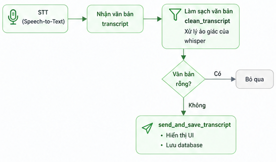
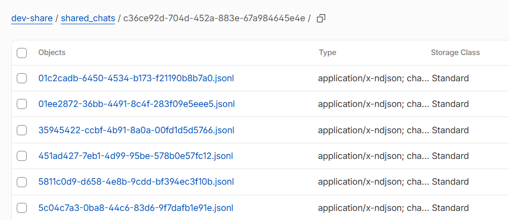
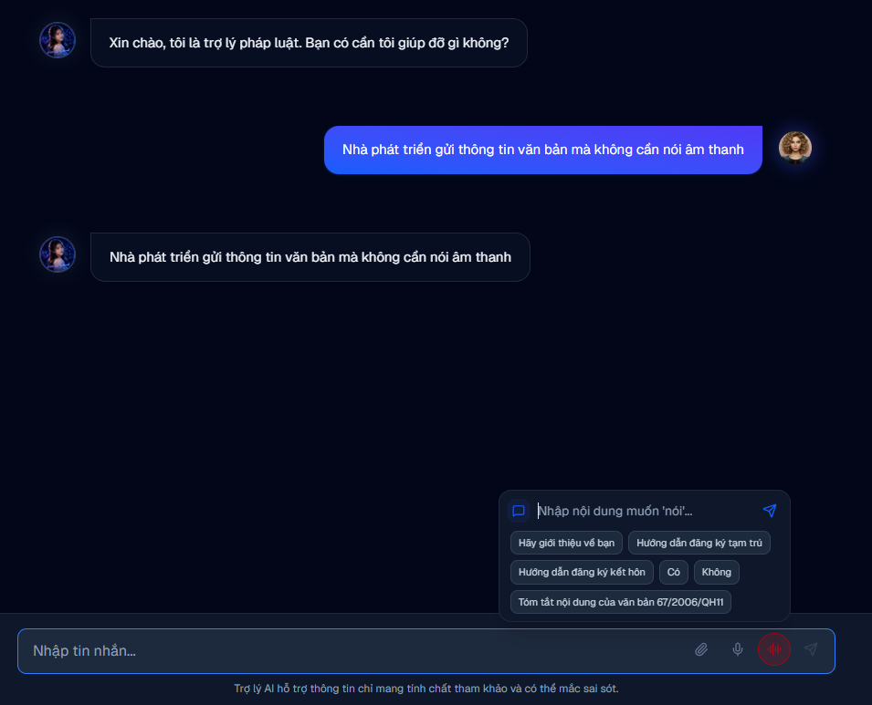
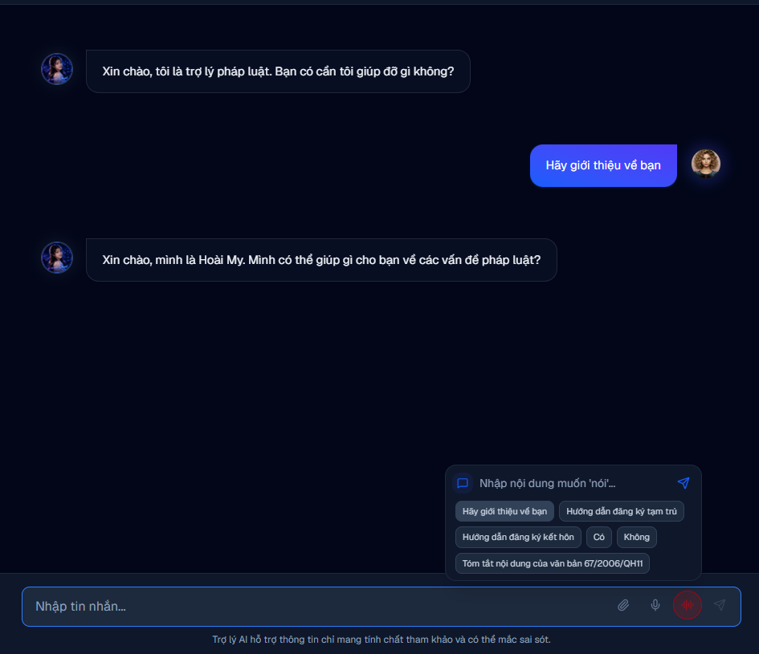
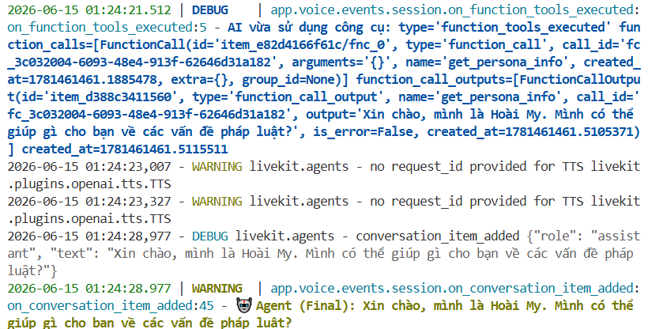